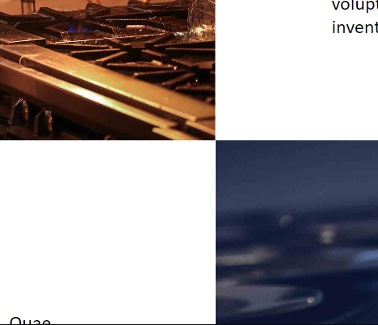
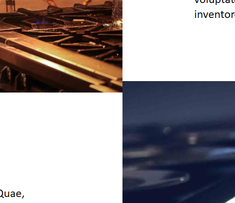
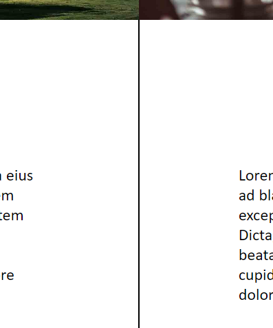
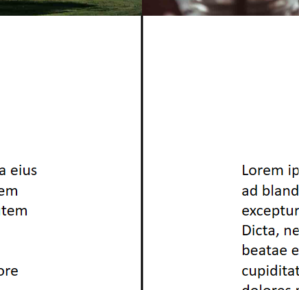
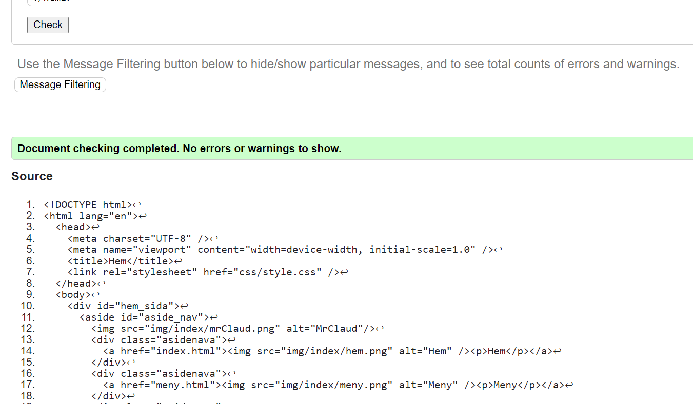
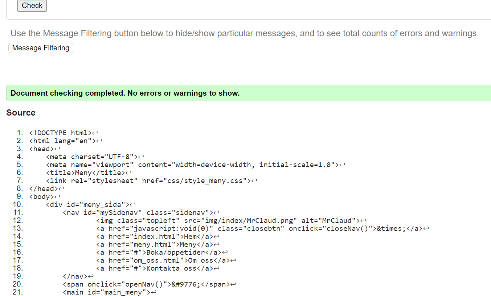
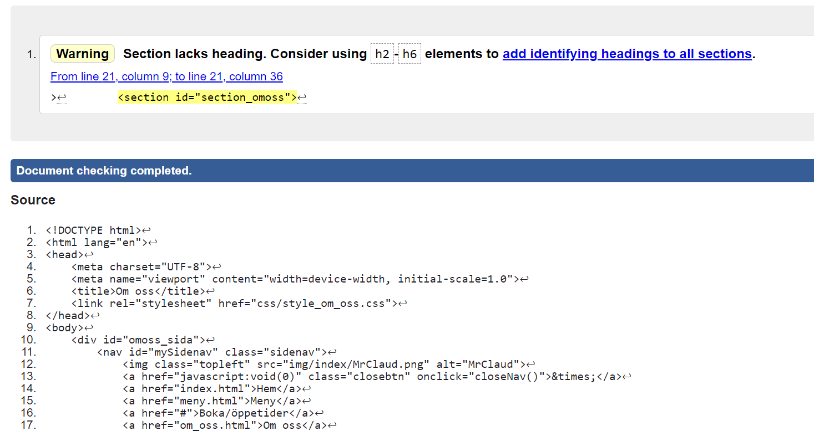
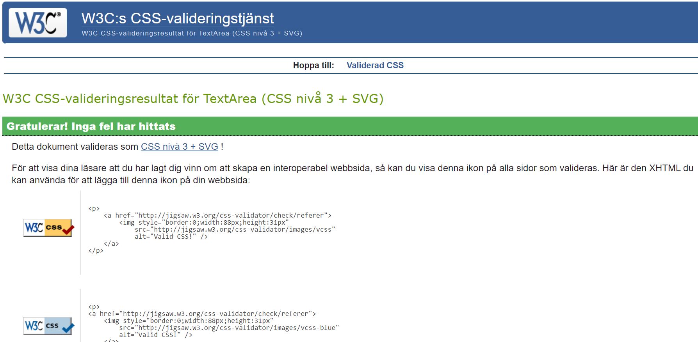

Jag ska göra en fransk resturang. Den är väldigt fancy. Resturangen är gjorde för den som har pengar och vill spendera det på något gott, förmodligen någon äldre än 18 (tänker jag), men alla är välkomna:) Det är ett dyrare ställe med många olika rätter och alternativ för att veganer och vegitarianer också ska få njuta av den goda maten.
Mina tre sidor ska vara en hem, om oss (boka/öppettider) och meny sida.
Hem: Man ska kunna nå dom andra sidorna enkelt. Det ska vara en enkel sida med bilder på resturangen och lite mat med en beskrivning under bilderna.
Om oss: Här ska det finnas lite fakta om restaurangen, maten och lokalen. Sidans ska vara enkel och stilren.
(Boka/öppettider: Man ska på ett enkelt sätt kunna boka ett bord på resturangen. Öppettiderna ska också vara tydliga och förståliga för besökaren.)
Meny: Här ska det finnas en blid för varje rätt/val, t.ex. drickor, förätt, sidorätt och vegetariskt. Texten på bilden är en länk som sedan då för besökaren vidare till alternativen med en beskrivning (jag kommer inte göra lägga något i länken eftersom vi bara ska ha tre sidor).
| Vecka | På lektionen | Utanför lektionen |
|---|---|---|
| 47 | Börja kolla på inspiration till sidan. Skissa och sen koda grid layouten för att se så att allt ser bra ut. Sen börja kod sidorna. (dokumentera) | Göra klart en av sidorna och kolla på lite inspration till om oss (boka/öppettider) sidan eller fortsätta på hem sidan. (dokumentera) |
| 48 | Kolla inspiration till en logga och till om oss (boka/öppettider) sidan. Även göra grid layouten till om oss (boka/öppettider) sidan.(dokumentera) | Fortsätta på om oss (boka/öppettider) sidan och skissa en logga. (dokumentera) |
| 49 | Ha två klara sidor (förmodligen meny och hem) och göra klart loggan. (dokumentera) | Jobba på om oss (boka/öppettider) sidan och kolla igenom dom andra efter möjliga fel. (dokumentera) |
| 50 | Göra klart sista sidan, om oss (boka/öppettider sidan), och börja på utvärderingen. (dokumentera) | Skriva klart utvärderingen |
På lektionen letade jag först efter inspiration från olika sidor. När jag hade fått en blid av hur jag ville att min hem sida skulle se ut började jag skissa den. Jag ville även ha en meny sida, den skissades också. Efter skisserna var ganska klar började jag göra grid layouten på sidan för att se så att allt såg snyggt ut. Några ändringar gjordes på skissarna när små fel hittades. Jag gjorde grid layouten och nav:ens innehåll till hem sidan. Jag gjorde även grid:en för meny sidan. Det mesta gick ganska bra. Jag var lite slarvig med skissen på meny sidan men annars blev allt rätt så bra.
(Utanför lektion):
Meny sidan blev klar. Jag listade ut hur jag skulle bygga upp sidan med olika div:s för dom oliak rätterna och styla det för att få det att se ut som jag ville. Sen letade jag bara upp biler på Unsplash. Jag glömmde dock en viktig bit, att kolla om ägaren av bilderna ville ha cred för bilderna. Kollade upp detta sen och alla blider på unsplash kan man använda utan att belhva ge cred. I början hade jag lite problem med att få texten i mitten, på bilden, men sen fixades det efter jag fick lite hjälp. Jag har även försökt få ner bilderna till runt 100KB men det har inte gått så bra. Först la jag in dom på en sida som drog ner bilderna lite och sen la jag in dom i photoshop. I photoshop drog jag ner allt till max men jag ha fortfarande några bilder som är runt 300KB. Jag ska se om detta går att fixa på nästa lektion. Jag gjorde även nav:en i menyn och den blev riktigt bra. Det var väldigt lite js script som skulle vara med för att få det att fungera. I vanliga fall skulle jag inte använt det för jag vet inte hur det fungerar men det var bara två saker och jag förstod vad det var som dom gjorde så jag valde att ha med det ändå. Mina sidor är också ihoplänkade så man kan enkelt komma till dom. Jag är väldigt nöjd med hur sidorna ser ut nu. Nästa gång ska jag börja på boka/öppettider sidan och när jag skissar den ska jag vara nogrann så att jag inte behöver göra om. Jag har funderat på hur jag ska göra boka/öppettider sidan, det känns som att det kommer bli svårt och jobbigt. Min tanke är att skita i den och göra en om oss sida istället. Jag tror det kommer bli bättre och roligare för mig. Jag kommer lämna allt jag sktivit om boka/öppettider men skriva det i en () för det var min första tanke och jag tycker det är bra att ha med iallafall.
Jag har gjort iordning css dokumenten så att jag kan lägga allt i ett. Har även gjort dom lite snyggare. Jag har hittat inspration till några iconer och jag la till text till min hem sida. Jag har även börjat kolla på hur logan ska se ut.
(Utanför lektion):
Jag hittade blider till om oss sidan som jag sen optimerade till en passanded storlek. Sen las bilderna in i sina articles och storleken ändrades så dom passade på sidan. Först visste jag inte hur jag skulle få bilderna och texten att ligga som jag ville, men sen skapade jag en grid och några id:n och allt funkade bra. Jag vände även på en blid för att det skulle se bättre ut med nav:en och att nav:en inte skulle gömma lite text på sida. Jag har gjort klart alla iconer till min nav i hem sidan, först hade jag lite problem med att centrera allt men de fixades med hjälp av flex.
Jag gjorde klart min logga. Det gick ganska bra, jag upptänkte några nya saker som paint buckeet tool och resultatet blev ganska bra. Något jag ska tänka på nästa gång jag gör saker i photoshop är att kopiera lager och ändra saker på kopian så att jag enkelt kan nå orginalet. Loggan är inlaggd på mina sidor och nu har jag bara jobbat med att få allt att bli fint och fixa det sista.
(utanför lektion):
Jag har kollat html koden för meny sidan i validator och jag fick inga errors. Kollade html koden för hem sidan och fick inga errors. Nu är även hem sidan klar. Jag är snart klar med om oss sidan men jag har ett litet problem en border som inte vill gå hela vägen. Annars är jag nästan klar med allt, har bara testningen och utvärderingen kvar. Problemet med om oss sidan fixades med display: flex och flex-direction: column. Jag kollade html koden för om oss sidan och där fick jag bara en varning.
All css kod är inlaggd i ett css dokument. Jag kollade css koden i en validator och jag fick inga varningar. Det var lite problem när jag skulle ladda ner bilderna på planeringen för att dom var i något skumt format men det löste sig med en sida som heter heictojpg. Jag käner mig klar med sidorna så nu ska jag börja med testningen.
(utanför lektion)
Jag har gjort testningen av sidorna och det var inget större problem där. Skrev även klart utvärderingen, inga större problem än att jag undrar om jga ska skriva mer. Ett annat stort problem jag hade var att jag inte kunde spela in min skär på något sätt. Jag frågade några och de dom sa funkade inte. Jag lyckade sinte hitta något sätt att skärmfilma på datorn så jag tog mobilen och filmade på den, hoppas det funkar bra. Filmen blev väldigt stor så jag försökte göra den lite mindre. Det gick bra men den e fortfarande stor, 25MB. Jag la in videon, stylade lite i html:n med height: 200px;, object-fit:cover; och controls.
Jag testade hem sidan i chrome, firefox, opera och edge, största skillnaden var att bilderna i naven fick sämre kvalite i edge och att skärmen var lite mindre i opera så texten hade en liten annat position. På meny sidan såg jag ingen större skillnad förutom kvaliten på loggan i edge. Om oss sidan ser likadan ut föutom i edge, där loogan är i dålig kavlite, borden är tjockare och kanterna på två bilder går över varandra. I firefox går också kanterna på två bilder över varandra
   Valideringen av html koden gick bra, fick bara en varning.
  Valideringen på css koden gick också bra
Överlag tycker jag att detta projekt har gått bra. Ibörjan var jag lite slarvig med skisserna vilket jag inte ska vara nästa gång. Detta ledde till att jag var tvungen att göra om min plan och layout på vissa sidor. Själva kodningen gick bra, jag använde grid, felx och massa style i det för att få sidorna att se ut som dom gör. Men js dokumentet så skulle jag inte i vanliga fall använt det med som sagt var det två små saker som stod där. Jag förstår vad dom gör men jag hade inte vetat hur jag skriva det själv. Det är förmodligen inte det bästa att jag använde js men jag övergögde de och ansåg att det var okej för att det är inte mycket js och jag förstår vad som händer. Jag var lite dålig på att dokumentera i början för vi fick inte tydlig genomgång på det. Så om jag skulle kunna göra om något så hade det varit dokumentationen. Jag tänkte inte heller på att man ibland behöver ge cred eller liknande när man tar bilder från nätet. Jag hade tur att bilderna togs från unsplash och att dom är gratis där. Jag har har lärt migmer om photoshop och hur man kan styla, t.ex. z-index och border, även fått en djupare uppfattning av koden och dess innehåll. Förbättring i produkten kunde definitivt ha varit att göra om om oss sidan, jag tycker inte den är fin och jag skulle gärna ändra på den. Förbättring i processen hade varit min nogrannhet ibörjan, de va ett par slarvfel och jag orkade först inte med dokumentationen, men jag gjorde den ändå. Jag undra hur mitt slutresultat hade sätt ut om jag inte hade ändrat boka/öppettider sidan till om oss sidan. Jag bytte p.g.a. det skulle ta lång tid och kände att det var bättre att ta något lättare, men vem vet jag kanske kunde gjort en jättebra boka/öppettider sida.